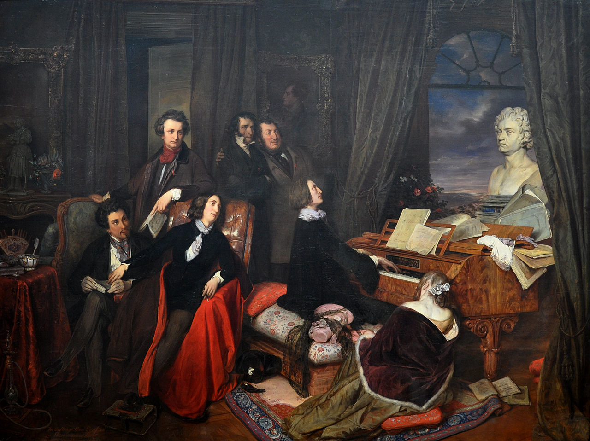
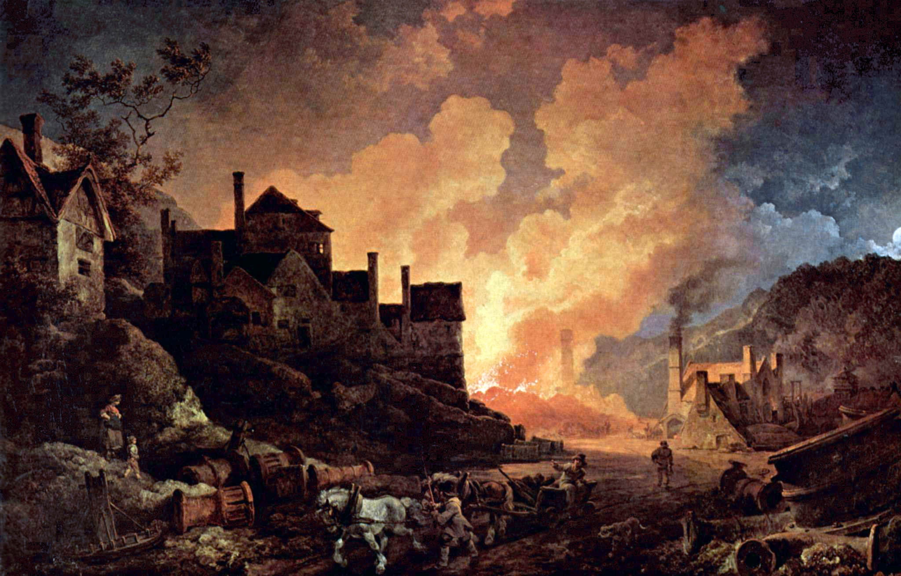
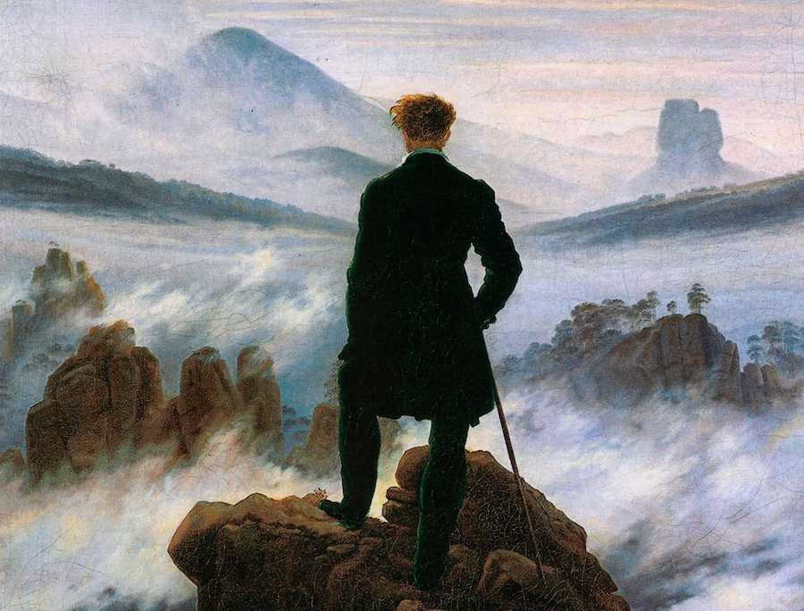
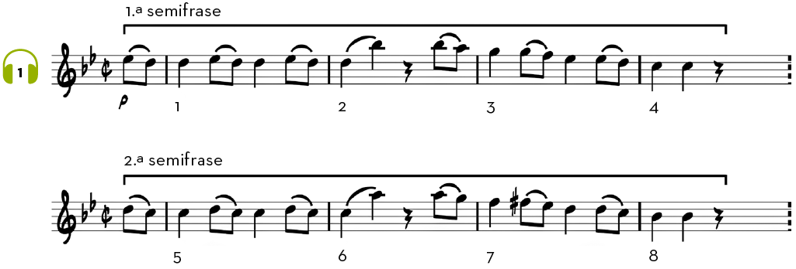
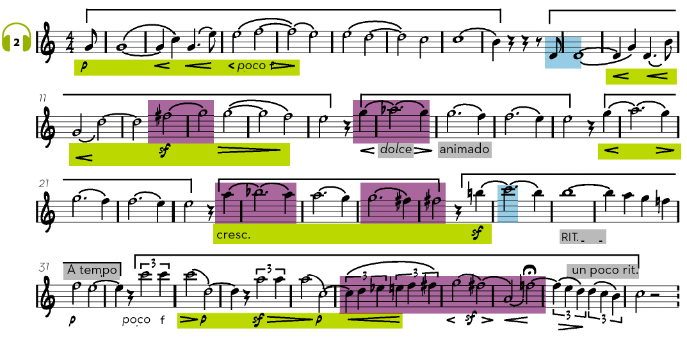

Contexto histórico
Probablemente habrás escuchado alguna vez la frase «Qué persona más romántica». Aunque se trate de un adjetivo poco preciso, posiblemente lo que se quiera decir es que es soñadora o que tiene fantasía e imaginación. De la misma manera, lo antiguo, lo exótico y lo misterioso será atractivo para los músicos del Romanticismo, corriente estilística que se desarrollará a lo largo de todo el siglo XIX.
- Política (Libertad y Nacionalismo): nació al calor de la Revolución Francesa y las oleadas revolucionarias de la primera mitad del siglo XIX. Los románticos apoyaron fervientemente la libertad individual, la democracia y la independencia de las naciones frente al absolutismo monárquico.
- Economía (rechazo a la Industrialización): fue una reacción directa contra la Revolución Industrial y el frío materialismo del capitalismo emergente. Ante las ciudades contaminadas y el trabajo mecanizado, el movimiento idealizó la naturaleza salvaje, el misticismo y los paisajes puros.
- Arte (el triunfo del sentimiento): rompió con las reglas rígidas y la razón del Neoclasicismo. En la literatura, pintura y música, el objetivo principal pasó a ser la expresión de las emociones intensas, la subjetividad, la melancolía y el ansia de rebeldía.
 |
 |
 |
Para ver qué elementos musicales novedosos aporta el estilo romántico, vamos a comparar una melodía de Mozart (Clasicismo) con una de Berlioz, compositor del Romanticismo.
Escucha en primer lugar la melodía de Mozart:
🎧 Audición 1

Si recuerdas, esta música ofrecía una gran simetría en muchos de sus elementos musicales: melodía, compases, armonía y ritmo. Escucha ahora la siguiente melodía, perteneciente a la Sinfonía fantástica, de Berlioz:
🎧 Audición 2

En comparación con la pieza de Mozart, en esta melodía romántica se observan los siguientes elementos, que son propios de la música del Romanticismo:
- El ámbito melódico es muy amplio: desde un re grave a un do agudo.
- Las indicaciones dinámicas son muy variadas: diminuendo, sforzando, crescendo, piano.
- La música se vuelve más cromática por el abundante uso de alteraciones.
- El uso de adjetivos como dolce o animando, además de sutiles cambios de tempo, contribuye también a que la música transmita estados de ánimo muy variados.
- La melodía ya no es tan simétrica como en el Clasicismo. Observa que la melodía tiene 40 compases en segmentos de 8 + 7 + 4 + 4 + 4 + 5 + 8
¿Qué vamos a aprender?
5. Música del Romanticismo
5.1 - Música vocal
5.2 - Música instrumental
5.3 - Instrumentos del Romanticismo.